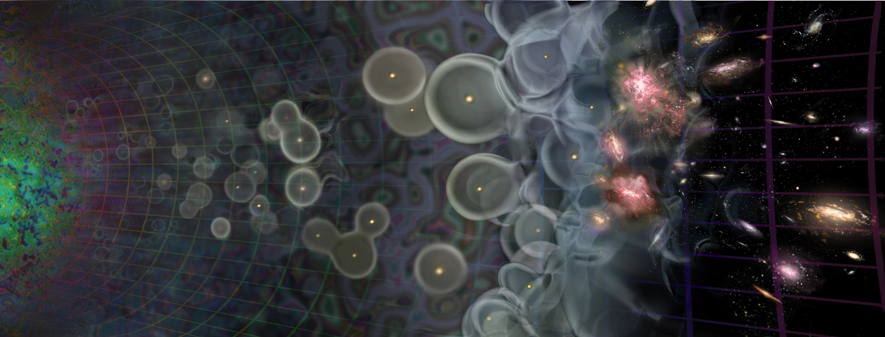
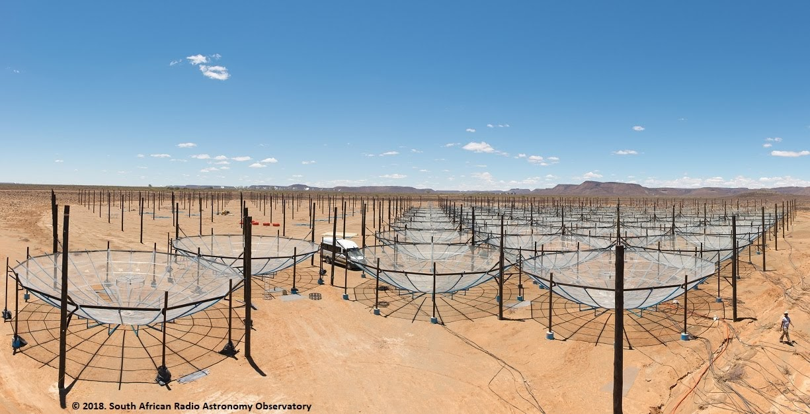

I study an era of the Universe known as the Cosmic Dawn. This period is characterized by the formation of the first luminous structures (stars and galaxies) in the Universe. As one of the last unexplored frontiers in the history of the Universe, I am working as part of an international collaboration to try and detect the effect these first sources have on their surrounding gas. We use a telescope consisting of 350 14.7-meter radio dishes called the Hydrogen Epoch of Reionization Array (HERA) which is located in the Karoo Desert of South Africa. We use the array to look for meter long radiation coming from hydrogen gas 1 billion years after the Big Bang. Once we detect the signal of the first galaxies, we'll be able to begin to understand the nature of these first galaxies in terms of what kind of radiation they emit, how they were formed, and what effect they had on their surroundings. These questions are fundamental for understanding galaxy evolution and formation.
A schematic view of the history of the Universe with age increasing to the right. After the Big Bang (left), not much happened until luminous sources started to form about a billion years later (cosmic dawn), creating ionized bubbles in the neutral gas. When the bubbles started to coalesce and merge, this is known as the Epoch of Reionization. This is the regime that HERA is trying to detect. After this time, the Universe began to look like what it does today, with islands of galaxies and ionized gas inbetween.
HERA uses the 21 cm hyperfine transition of hydrogen to trace the gas in the early Universe. This emission originally has a wavelength of 21 cm, but due to the expansion of the Universe, it gets redshifted to 2 meters! This requires the use of large radio antennas, like the dishes below, to detect the signal.
But why go all the way to the middle of the desert in South Africa? The simple answer is to get away from people. It turns out that modern civilizations generate a lot of radio frequency emission with cell phones, televisions, and microwaves (which have been confused with a new source of emission!), to name a few. Emission from these objects interfere with and mask the signal that we are trying to detect. Therefore, radio astronomers like to put their telescopes in the middle of nowhere!
I work on a number of activities related to commissioning the telescope. I develop algorithms for the real time processing system that reduces data as it is being collected in the field. Specifically, I develop algorithms for the detection of malfunctioning antennas, radio freqeuncy intereference excision, calibration, foreground removal, and general software development for production deployment.
Prior to HERA, I analyzed a large dataset from a predecessor instrument called the Donald C. Backer Precision Array for Probing the Epoch of Reionization (PAPER). I took raw data all the way to a statistical measurement of the neautral gas at high redshift, producing an upper limit on the power of the signal. We proved that the gas had been heated in the early Universe due to some astrophysical sources. You can find the paper here.
I started out down the path of radio astronomy because of radio instrumentation. I initally began my career as a digital instrumentalist, building digital correlators using FPGA's and GPU's for the PAPER instrument. These are the instruments that are used by radio interferometer arrays to correlate all the antennas with each other to produce the raw data products. I worked with the Center for Astronomical Signal Processing and Electronics Research (CASPER) to build these digital backends and got to deploy them in the field!
In effect, I have worked on every aspect of a world class radio astornomy experiment. I've built physical telescopes; I developed, built and deployed digital backends for data acquisition; comissioned new arrays and made sure the instrument was working as expected; developed algorithms for real time systems that process raw data; and interpreted the statistical measurments that relate back to the actual science objective of the experiment.